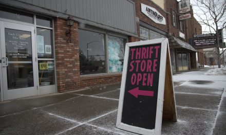

Second Helpings Thrift Store

Welcome to Second Helpings - a non profit thrift store in Rexburg, Idaho.
Read below to learn about our mission and how you can get involved in helping our community
How to get involved
There are plenty of way to get involved, including donating recources, volunteer hours or shopping at the thrift store.
Learn MoreOur Mission
All proceeds from our store go directly to helping clients of the Family Crisis Center, who are survivors of domestic violence and sexual assault.
FAQ